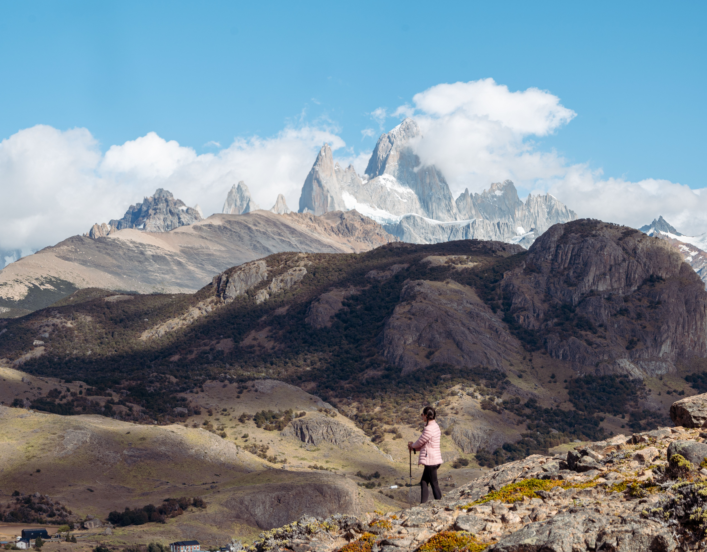
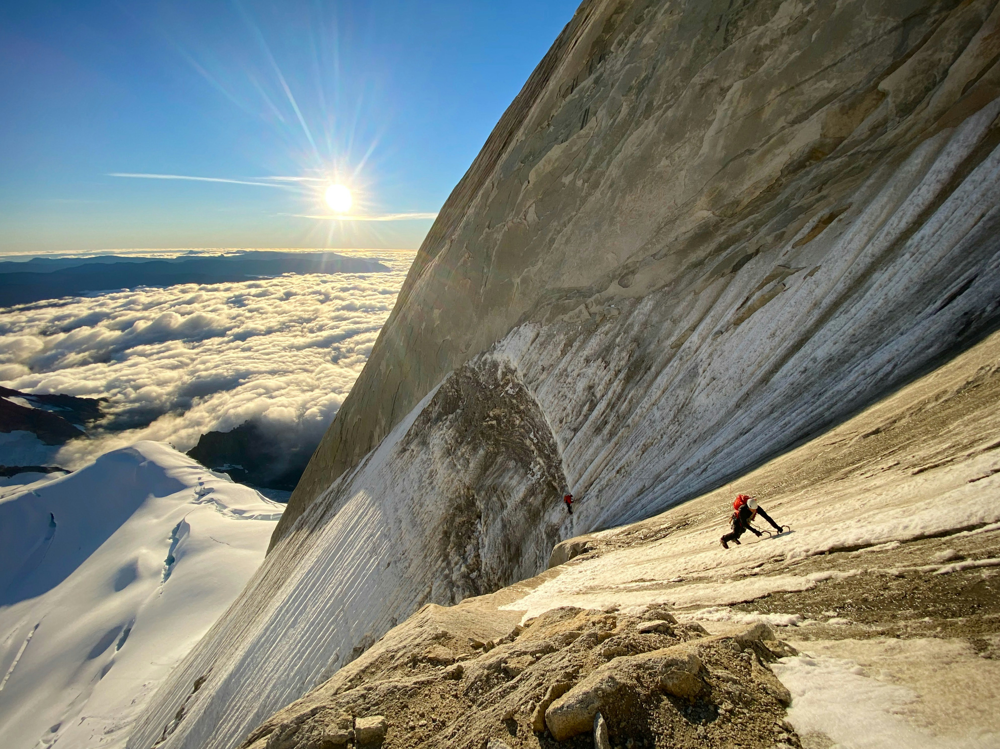
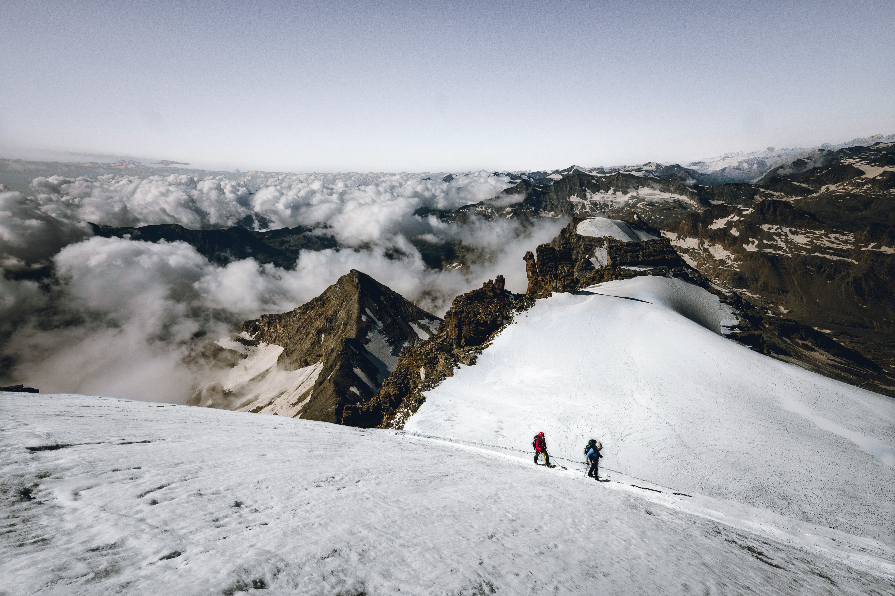
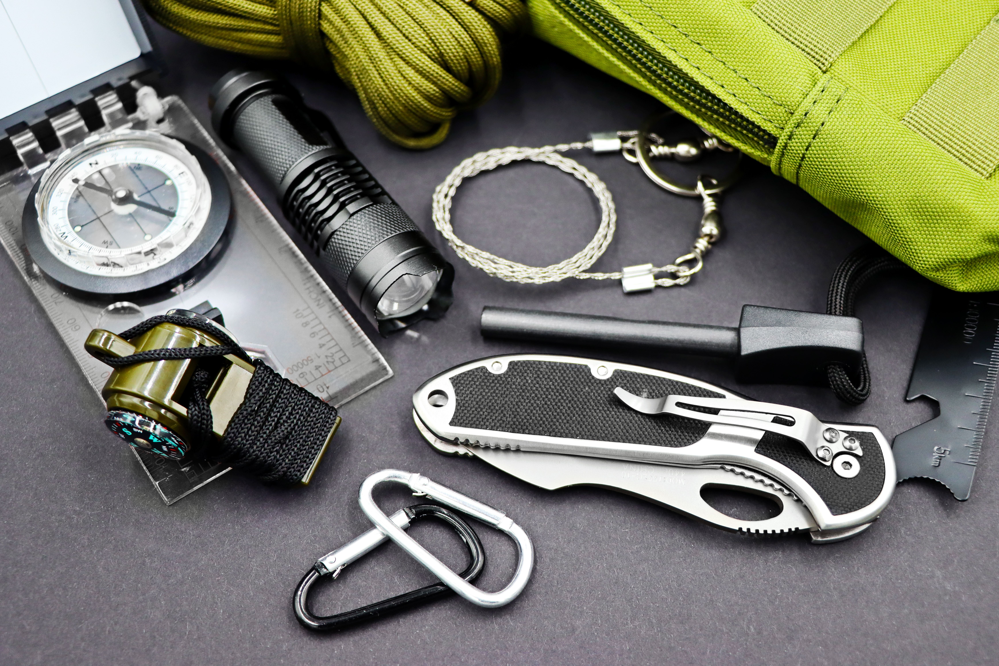

Ratio de seguridad
01El estándar
1 guía UIAGM cada 2 montañistas. Garantiza velocidad de reacción y capacidad de respuesta inmediata ante cualquier incidente en ruta.
Ascenso técnico de alta exigencia en el corazón del Parque Nacional Los Glaciares ubicado en el sudoeste de la provincia de Santa Cruz.
Resumen ejecutivo
"El Fitz Roy no es una cumbre más; es un símbolo de compromiso técnico y respeto por la montaña. Esta expedición está diseñada para montañistas que ya dominan la técnica de escalada en roca y hielo, y buscan enfrentar las condiciones cambiantes y hostiles de la Patagonia."
Nuestro enfoque no es el turismo de altura, sino la ejecución impecable de una estrategia de ascenso en uno de los terrenos más exigentes del mundo.



Ficha técnica
Ratio de seguridad
01El estándar
1 guía UIAGM cada 2 montañistas. Garantiza velocidad de reacción y capacidad de respuesta inmediata ante cualquier incidente en ruta.
Requisitos técnicos
02Lo que necesitás
Escalada en roca grado V+, aseguramiento y rescate en grietas, y certificado médico de aptitud para alta montaña.
Logística Cúspides
03Qué incluimos
Cuerdas, material técnico de aseguramiento y comunicación satelital. Vos traés: botas dobles, arnés, crampones y vestimenta técnica.
Método Cúspides
Trekking de aproximación al Campamento Base con carga técnica. Revisión y validación de protocolos de seguridad y puntos de corte con cada miembro de la cordada.
Logística de vivac y acopio de material en campamentos intermedios. Aclimatación progresiva y ajuste de la estrategia según condiciones del terreno.
Monitoreo meteorológico crítico. Ascenso final con técnicas de escalada en roca y hielo, gestión dinámica de riesgos y tiempos de corte estrictos. Sin improvisación.
Protocolo de descenso por rapel y bajada al campamento base. Revisión de material, debrief técnico con el equipo y evaluación de desempeño individual en terreno.

Fitz Roy · Patagonia ArgentinaLo que incluye tu expedición

Proceso de admisión
Buscamos compañeros de cordada comprometidos.
"El acceso a esta expedición está sujeto a una entrevista técnica. Evaluaremos tu historial de ascensos y tu capacidad de resolución ante situaciones de estrés en terreno técnico."
"Si tu objetivo es únicamente obtener una foto, este programa no es para vos. Si tu objetivo es aprender a moverte en la alta montaña con autonomía, tu lugar está acá."